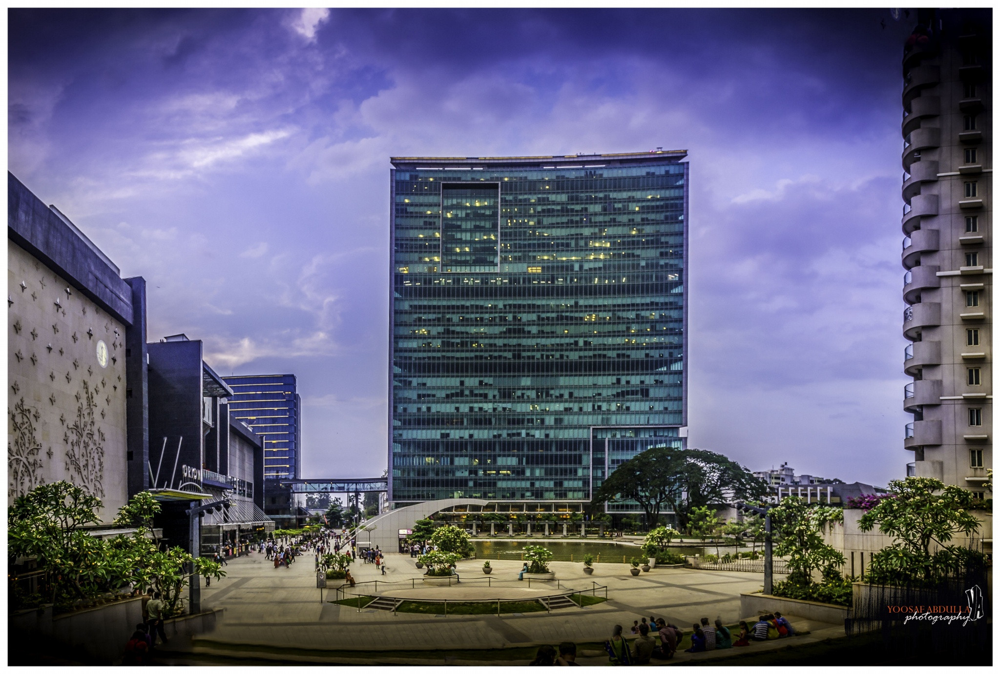

Enjoying a salubrious climate all year around, the bustling capital city of Karnataka has a perpetual holiday atmosphere. Being a major and fast upcoming city of South India Bangalore offers more than a day or two of sight seeing. Something is always going on here – exhibitions, carnivals, music and dance concerts, rapid industrial growth has not taken away its old world charm. However, the MG road area with fast food joints, yuppie theme bars and glitzy malls present a stark contrast with the rest of the city space.

In recent times the city has emerged as major information technology centre and is therefore referred to as Silicon Valley of India. Inspite of unfavourable power and infrastructure, in the last twenty years or so it has become host to a number of businesses, particularly the software industry. With over 60% growth rate the city has set up electronic city and various IT parks outside its boundary. The IT giants like Infosys, Wipro, IBM, Oracle, Microsoft, Motorola and others are all here. Easy availability of software professional s and favourable climate has given Bangalore edge over other cities. All the recent strides in to IT by the city augur well indicating a bright future. When Delhi is the political capital, Mumbai is commercial capital, then given the rapid pace of development of IT sector here, it will not be out of place to dub Bangalore as IT capital of India.